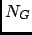
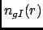
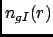
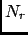
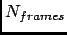
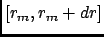
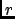

Next: Parameters
Up: Coordination number
Previous: Coordination number
Contents
Theory and implementation
In chemistry, the CN is the total number of neighbours of a central atom in a molecule or ion. The definition used in nMOLDYN is somewhat
different and can be seen as an extension of as the former definition. Indeed, in nMOLDYN, the CN is not defined over one defined central atom but around
the centers of gravity of a set of group of atoms. So, if only one group made of only atom is selected for the analysis, then, the
definition is the same as the original definition. In that context, the CN is defined as:
where  is the number of groups of atoms,  is the number of species found in the system and
 is the CN defined for specie I defined as the number of atoms of species I found
in a shell of width dr at a distance r of the center of gravity of the group of atom g.
is the number of species found in the system and
 is the CN defined for specie I defined as the number of atoms of species I found
in a shell of width dr at a distance r of the center of gravity of the group of atom g.
nMOLDYN allows one to compute the CN on a set of equidistantly spaced distances at different times:
where  and  are respectively the number of distances and times at which the CN is evaluated and
is the number of atoms of specie I found within
 at frame f from the center of gravity of group g.
From these expression, several remarks can be done. Firstly, the Eqs 4.192 and 4.193 can be restricted
to intramolecular and intermolecular distances only. Secondly, these equations can be averaged over the selected frames providing a time averaged intra and intermolecular
CN. Finally, the same equations (time-dependent and time-averaged) can be integrated over  to provide a
cumulative CN. nMOLDYN computes all these variations.
The concept of CN is useful for structure-related analysis. It can reveal for instance some packing effects that may have
occured during the simulation.
Next: Parameters
Up: Coordination number
Previous: Coordination number
Contents
pellegrini eric
2009-10-06